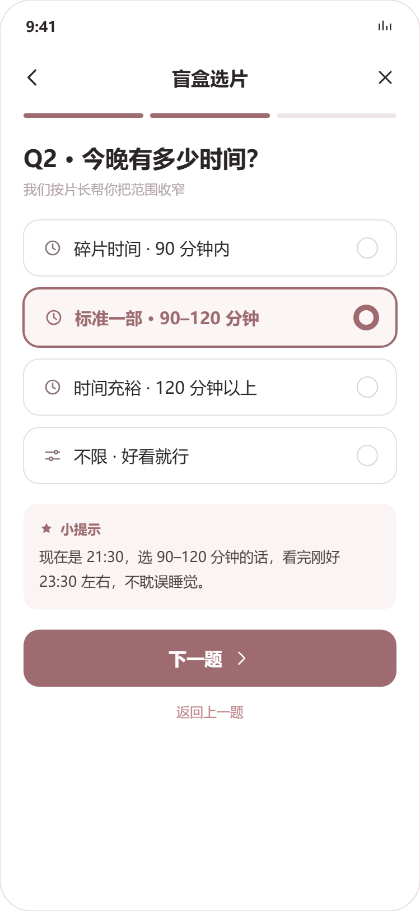
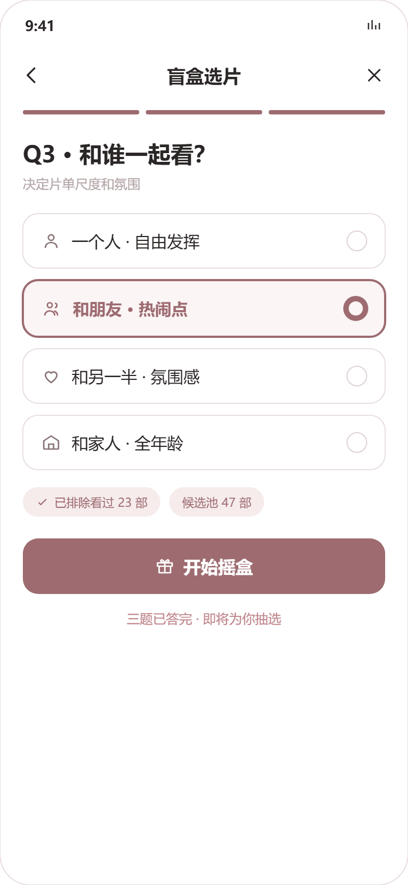
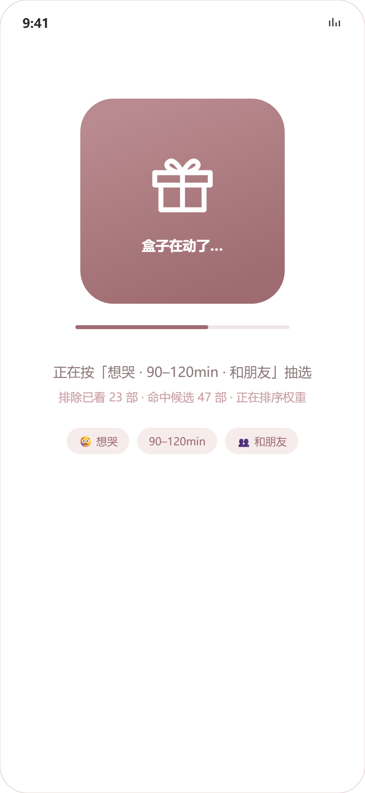
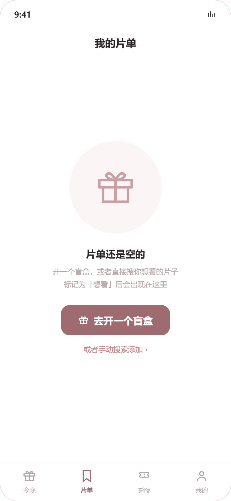
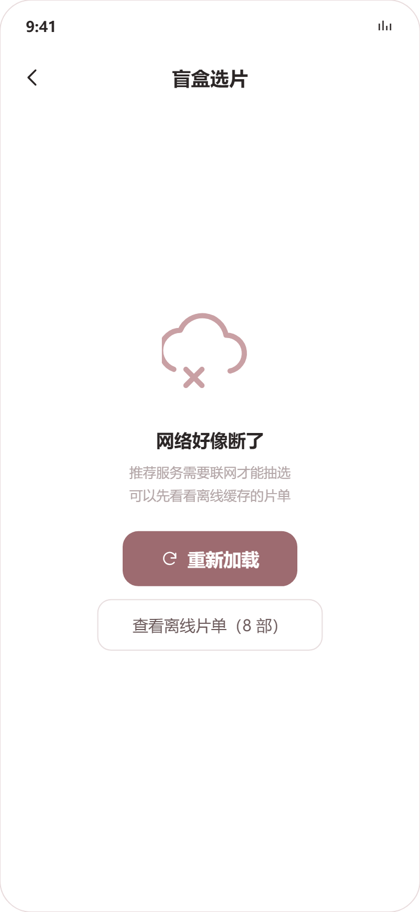
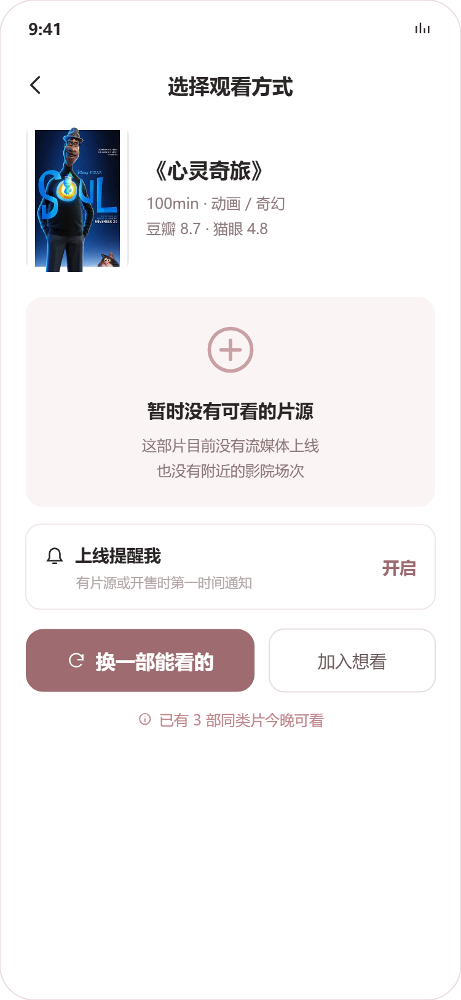

从问答到观影
选择一个步骤，查看对应的原型界面。
逐步收集观影心情、剩余时间和同行人数，为这一次推荐缩小范围。
结果页集中呈现一部影片、推荐理由与评分。想再比较时，可以换一部或查看影片详情。
渠道页区分流媒体和影院。课程原型还串联了场次、选座、确认订单和支付反馈。
问答与开盒过程
将筛选条件分步呈现，再进入揭晓动画。



空状态与异常处理
给暂无内容、网络异常和找不到片源的场景提供后续操作。


